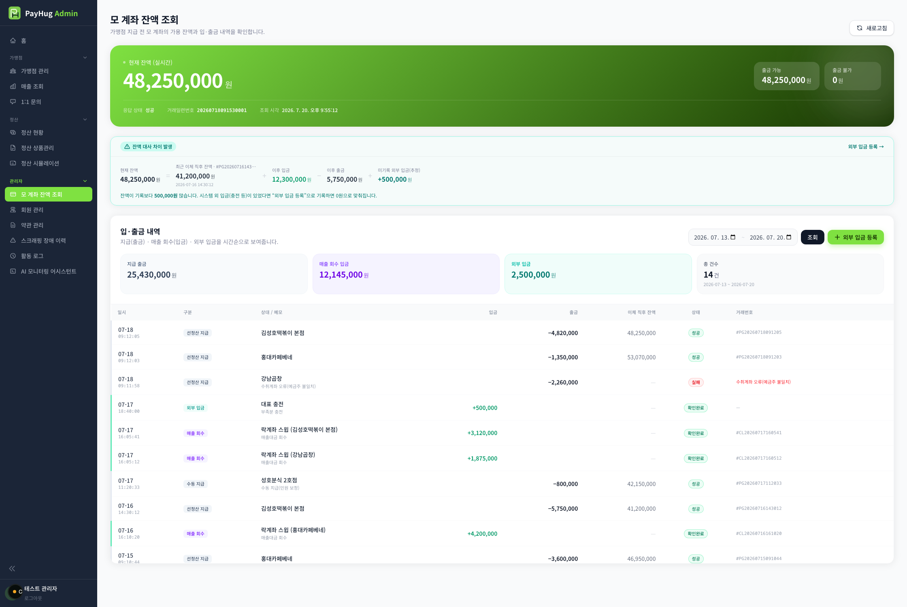

| No | 이름 | 설명 |
|---|---|---|
| 1 | 헤더 | 제목 "모 계좌 잔액 조회" 와 안내문"가맹점 지급 전 모 계좌의 가용 잔액과 입·출금 내역을 확인합니다."우측 [새로고침] 버튼 → 잔액만 다시 불러옴 (원장은 그대로)조회 중엔 라벨 "조회 중..." · 버튼 비활성접근권한 : ADMIN·PAYHUG(관리자)만그 외 계정은 본문 없이 "이 페이지는 관리자만 접근할 수 있습니다."잔액 조회 실패 시 상단 빨강 배너"잔액 조회에 실패했습니다." / "잔액 조회 중 오류가 발생했습니다." |
| 2 | 잔액 히어로 | 현재 잔액"현재 잔액 (실시간)" + 큰 숫자 + "원" (천단위 [,] 콤마)불러오는 중 → "조회 중..."우측 요약 2칸출금 가능 / 출금 불가 금액 (콤마)하단 정보줄응답 상태 : 쿠콘 응답코드 0000이면 "성공", 아니면 "메시지 (코드)"거래일련번호 · 조회 시각(브라우저 로컬 시각 표기)값이 비면 "-" 표시잔액·출금가능/불가는 쿠콘 응답을 그대로 표시 — 산정 근거는 개발 확인 필요 |
| 3 | 잔액 대사 | 최근 이체 앵커가 있을 때만 나타나는 대사 카드수식(가로)현재 잔액 = 최근 이체 직후 잔액(#거래번호·일시) + 이후 입금 − 이후 출금 + 잔차잔차에 따른 3가지 상태잔차 0 → "잔액 대사 일치" (초록), 라벨 "잔차"초과(+) → "잔액 대사 차이 발생" (청록), 라벨 "미기록 외부 입금(추정)" + 우측 "외부 입금 등록 →" 링크부족(−) → "잔액 대사 확인 필요" (빨강), 라벨 "차이(확인 필요)"상황 안내문초과 : "잔액이 기록보다 N원 많습니다. 시스템 외 입금(충전 등)이 있었다면 "외부 입금 등록"으로 기록하면 0원으로 맞춰집니다."부족 : "현재 잔액이 기록보다 적습니다. 출금 로그 누락 또는 잔액 조회 시점 차이일 수 있어 확인이 필요합니다."잔차·대사는 프론트 추정(앵커=최근 성공 이체 직후 잔액) — 산정 로직 개발 확인 필요 |
| 4 | 입출금 필터 | 소제목 "입·출금 내역" + 안내문"지급(출금) · 매출 회수(입금) · 외부 입금을 시간순으로 보여줍니다."기간 필터default : 오늘로부터 7일 전 ~ 오늘시작일 ≤ 종료일 · 종료일 ≤ 오늘 (미래 날짜 선택 불가)[조회] 버튼 → 서버에 그 기간을 다시 물어봄 (기간 바꾼 뒤 눌러야 반영)조회 중 "조회 중..."[외부 입금 등록] 버튼 → 등록 모달 열림 [AD_BALANCE_DEPOSIT]기간 요약 4칸 (원장 있을 때만)지급 출금 · 매출 회수 입금 · 외부 입금 · 총 N건(+기간)매출 회수 = 락계좌→모계좌 매출대금 스윕 (과지급 회수와 다른 개념)조회 실패 시 표 위 빨강 배너"입·출금 내역 조회에 실패했습니다." / "…중 오류가 발생했습니다." |
| 5 | 입출금 원장 | 표 항목일시 · 구분 · 상대/메모 · 입금 · 출금 · 이체 직후 잔액 · 상태 · 거래번호 · (삭제)상대 없으면 "-" · 메모는 상대명 아래 작게일시 왼쪽 세로선 : 입금 = 초록 · 출금 = 회색입금 열 = +금액(초록) · 출금 열 = −금액이체 직후 잔액 = 값 있는 건만 표시(캡처상 지급 출금 성공 건) · 없으면 "—"정렬 토글 없음 — 서버가 준 순서(시간순) 그대로5-1 구분 뱃지선정산 지급 · 수동 지급 = 회색 / 매출 회수 = 보라 / 외부 입금 = 청록5-2 상태 뱃지성공 · 확인완료 = 초록 / 실패 = 빨강 / 요청중 · 타임아웃 = 주황거래번호 : #번호 표기, 실패 건은 거래번호 대신 사유 메모를 빨강으로외부 입금 행에만 → 마우스 올리면 삭제(휴지통) 아이콘 노출누르면 확인창 "이 외부 입금 기록을 삭제할까요?" → 실패 시 알림(alert)상황별 문구불러오는 중 → "불러오는 중..."내역 없음 → "해당 기간에 입·출금 내역이 없습니다." |